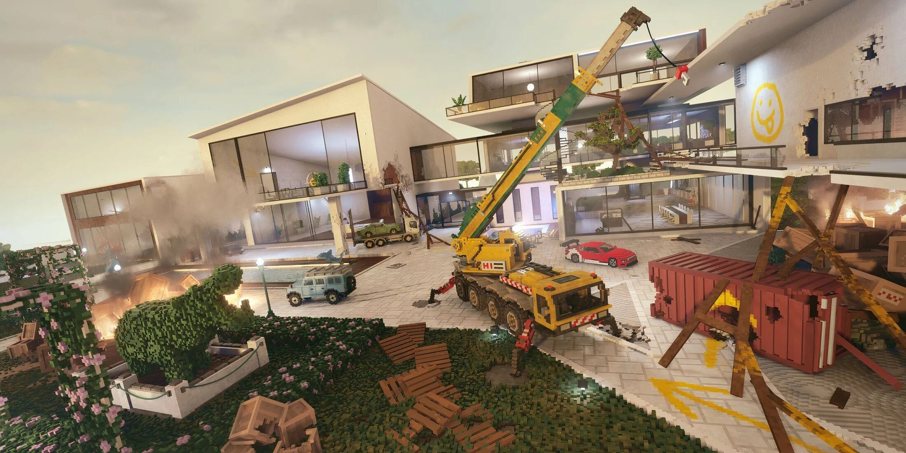

Teardown (с англ. — «Разрушение») — компьютерная игра-песочница с элементами головоломки и экшена. Разработана и издана компанией Tuxedo Labs в 2022 году. ru.wikipedia.org* steamcommunity.com Даты выпуска: 21 апреля 2022 года — для Windows; 15 ноября 2023 года — для PlayStation 5, Xbox Series X/S. ru.wikipedia.org* Платформы: Windows, PlayStation 5, Xbox Series X/S. ru.wikipedia.org* Бамбанул Тц Teardown - YouTube Сюжет Игрок берёт на себя роль персонажа, который выполняет незаконные задания — ограбления, угоны, уничтожение объектов и другие противоправные действия. Сюжетная кампания рассказывает о компании, находящейся на грани банкротства, которая начинает принимать заказы от не самых порядочных людей. С каждым новым контрактом герой всё глубже погружается в мир мести, предательства и страхового мошенничества. steamcommunity.com Главный герой остаётся анонимным, а его характер развивается через действия и решения, принимаемые игроком. dzen.ru Геймплей Основная идея — планировать и осуществлять «идеальное» ограбление, используя разрушаемость окружающего мира. Некоторые особенности геймплея: steamcommunity.com Воксельная графика и физика. Мир состоит из вокселей — крошечных объектов, каждый из которых обладает физическими свойствами. Это позволяет реалистично разрушать практически всё в окружении: здания, мебель, технику. Например, ударив кувалдой по стене, игрок делает пролом в точке удара, а не обрушивает всю стену. Инструменты и оружие. В распоряжении игрока — 17 различных инструментов: кувалда, газовая горелка, огнетушитель, огнестрельное оружие, взрывчатка и др.. По ходу игры можно улучшать экипировку за деньги, которые зарабатываются путём воровства дополнительных предметов на локациях. Техника — автомобили, грузовики, краны, экскаваторы и лодки — используется как для передвижения, так и для разрушений. steamcommunity.com ru.wikipedia.org* В большинстве миссий нужно собирать или уничтожать предметы, которые запускают таймер. У игрока есть неограниченное время на подготовку, и ему предоставляются различные инструменты, чтобы проложить путь в пределах уровня, который позволит ему выполнить поставленные задачи и добраться до машины для побега до истечения таймера. ru.wikipedia.org* Teardown поддерживает модификации — часть из них создана самими разработчиками, ещё больше модов добавлено в игру пользователями. Устанавливать их можно прямо из внутреннего меню игры или из мастерской Steam. cubiq.ru Отзывы В Steam у игры рейтинг «крайне положительные» (по данным на январь 2026 года). Критики отмечают реалистичную физику, креативный подход к выполнению заданий и активное сообщество моддеров. Среди недостатков упоминаются иногда проблемы с оптимизацией и отсутствие русскоязычной локализации. steamcommunity.com Где поиграть Teardown доступен в Steam — store.steampowered.com. store.steampowered.com Официальный сайт — teardowngame.com.